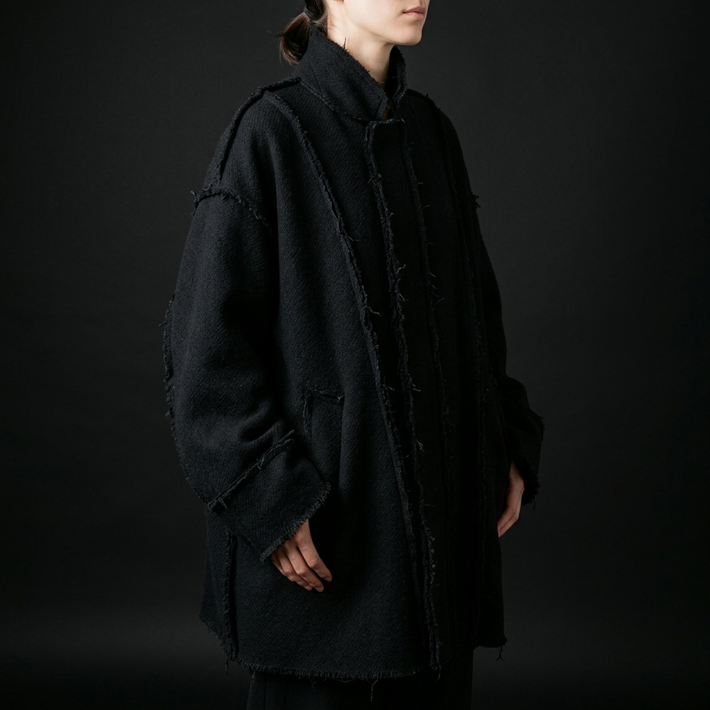
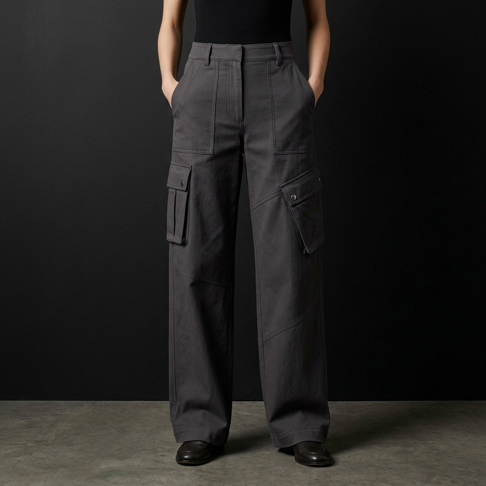
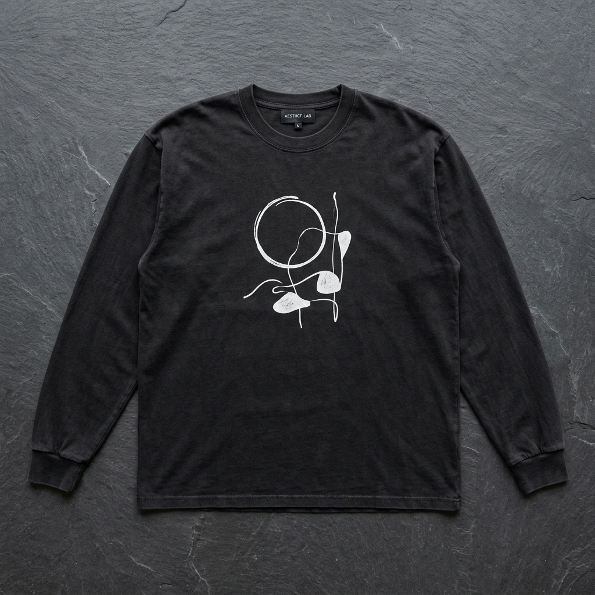
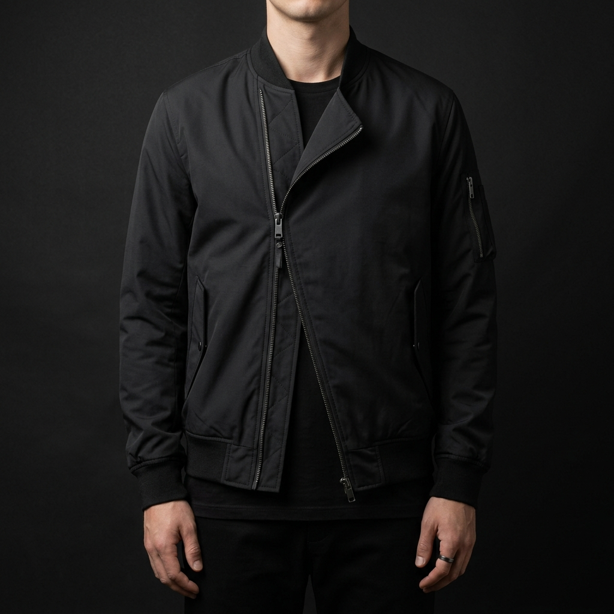
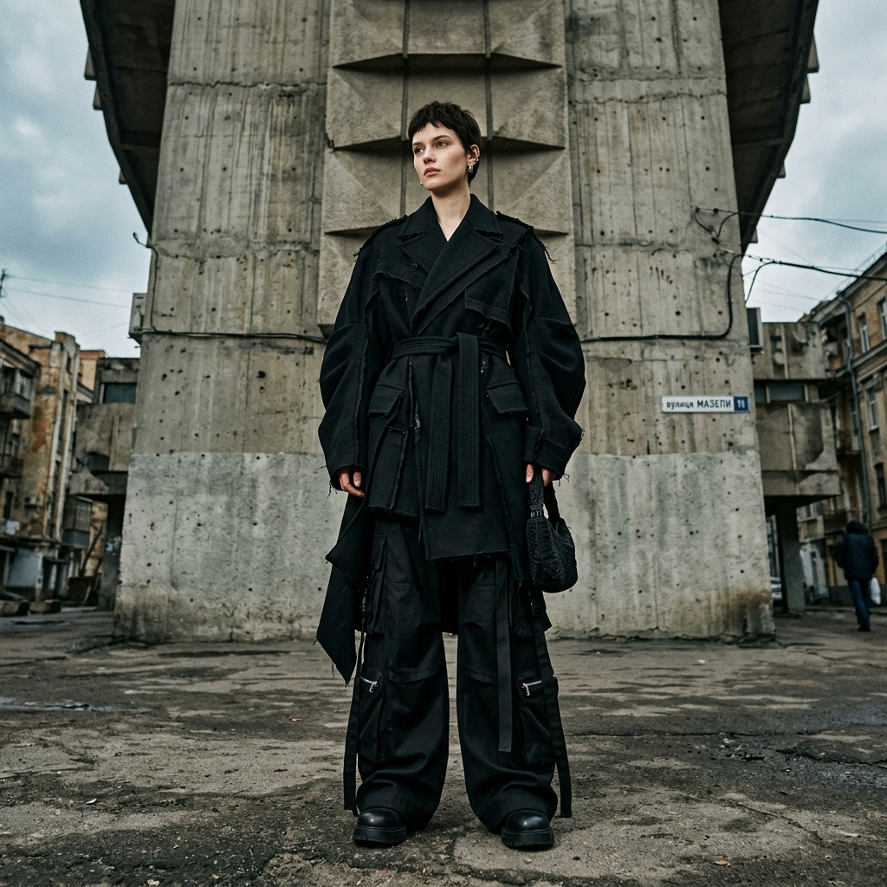
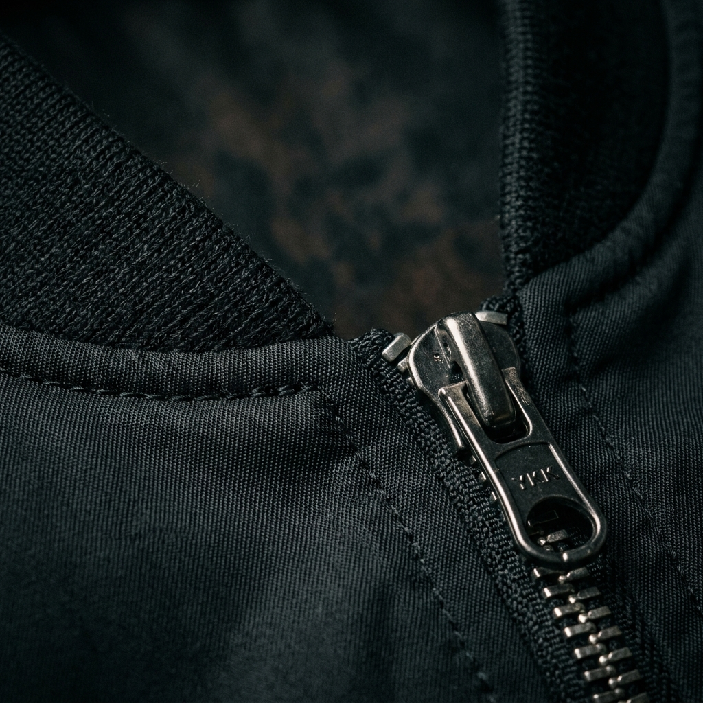
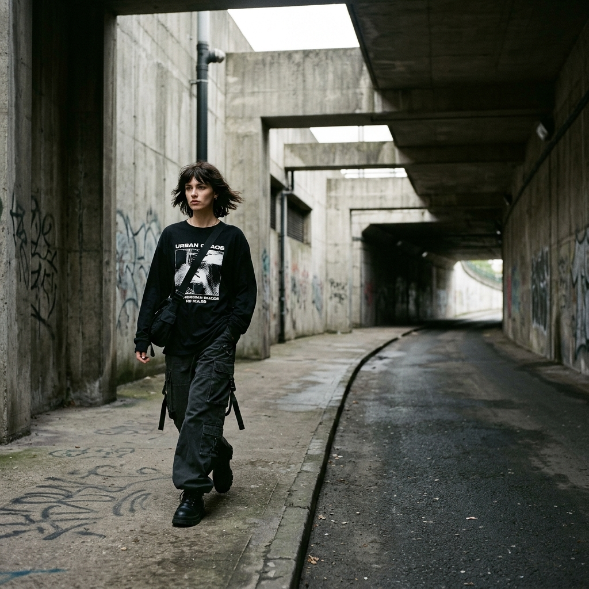
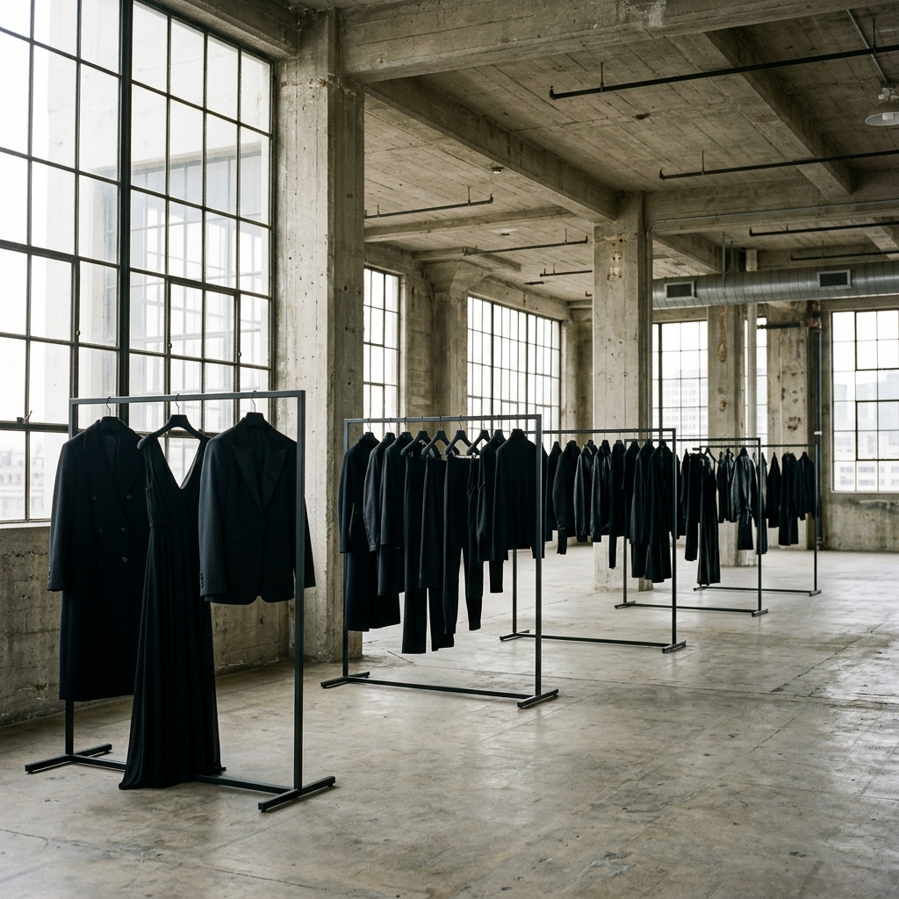

NEWRAW-EDGE COAT
Deconstructed overcoat. Unfinished seams, dropped shoulders. Experimental outerwear for the avant-garde wardrobe.
Avant-garde streetwear for those who reject the ordinary. Experimental silhouettes. Deconstructed forms. Dark minimalist clothing built for the underground.
Each piece in the VOID collection is designed around deconstructed silhouettes and experimental fabric manipulation. Post-punk underground fashion, made to last.

NEWDeconstructed overcoat. Unfinished seams, dropped shoulders. Experimental outerwear for the avant-garde wardrobe.

Six-pocket cargo silhouette with asymmetric seam detailing. Underground fashion staple. Dark minimalist clothing for everyday wear.

SOLD OUTOversized washed-black long-sleeve with distressed VOID graphic. Post-punk fashion statement. 100% cotton, pre-distressed.

LIMITEDConceptual outerwear with a radical asymmetric zip closure. Brutalist construction meets street-ready wearability.
VOID was born from a rejection of trend-driven fashion. We believe that brutalist fashion is not a style — it is a philosophy. Every garment is a statement against the disposable, against the safe, against the expected.
Archive Drop 01 is a collection of avant-garde streetwear designed for those who exist outside the mainstream. Deconstructed silhouettes. Unfinished edges. Deliberate imperfection. This is experimental fashion made to outlast seasons.
"We dress for the architecture of a city that hasn't been built yet."
— VOID, Archive Drop 01
Shot on location in Kyiv. VOID Archive Drop 01 garments styled for the post-industrial urban landscape.




VOID does not operate through traditional retail. To inquire about acquiring a piece from Archive Drop 01, reach out directly. Limited quantities only — each garment is unique.
void@void.archive @void.archive on InstagramBased in Kyiv, Ukraine. Shipping worldwide. Response within 48 hours.